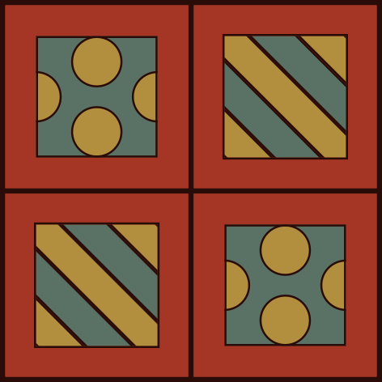
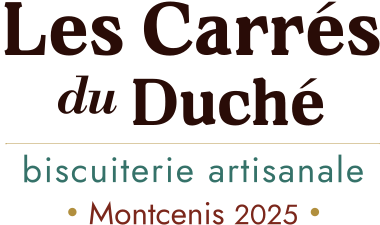

Estefanía Tsao Solano
Pâtissière & Biscuitière
Au cœur du Duché de Bourgogne, une biscuitière rêveuse glisse un souffle d'ailleurs dans les grands classiques français. Entre terroir et kokumi*, ses biscuits artisanaux célèbrent la beauté des instants précieux, imparfaits et délicats, cachés dans les recoins de n'importe quel jour comme les autres…
*Kokumi コク味
une richesse discrète, une rondeur en bouche qui prolonge la saveur et donne envie d'y revenir.